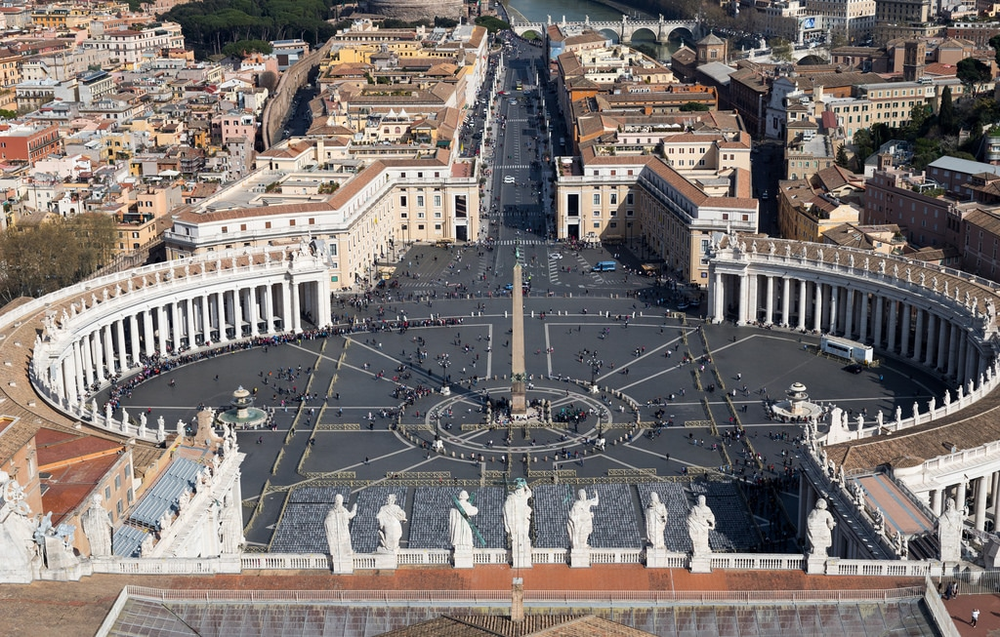

Rome

Rome is not only one of the most historical cities in the world its is also a place for great cheap food. I like Rome because of the plethoral of historical sites from the Pantheon to Colosseum. Certainly cannot be explored in one trip.
Tokyo

Tokyo is my favorite overall vacation spot. It has a balance of food, diverse culture, streetwear and historical sites all this combined with a easy mass transit system makes it my overall favorite place to vacation. Also the 7-11's are worth the stop for the best cheap food.
LA

LA is known for beaches, Hollywood and Beverly Hills but I enjoy LA for San Gabriel Valley (SGV) which is arguably some of the best Chinese food in the US. I've attatched a list of resturants in the SGV.